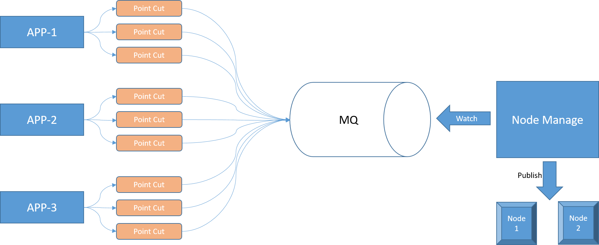

如何监测配置数据的变化
在工业互联网平台上存在多种业务应用，每个应用有自己的配置数据，当配置数据发生变更的时候需要及时的下发到边缘节点让配置生效。我们可以通过节点管理模块提供手动下发的功能，即操作人员修改完配置后通知系统管理员进行对应节点的配置下发。实际操作中发现由于引发配置变更的点过于分散，导致经常会忘记下发而无法使配置及时生效。再者业务操作人员自己并不清楚当前操作的配置是否需要下发，会引发很多无效的沟通，降低了生产效率。
如何在配置发生变化的时候及时监测到变更，由系统自动来引导配置变更流程是我们需要解决的问题，我们通过埋点通知的机制来应对。整体解决方案如下图：
如图所示，对于每个App的配置变更点，我们抽象一个Point Cut，通过对Point Cut的监控，可以获取配置的变化信息。同时通过MQ通知到节点管理服务，节点管理服务处理节点的配置版本管理。
在整个方案中主要的技术细节有两点：
- 配置变更点的抽象
- 配置版本管理
接下来就针对这两点进行详细的实现。
配置变更点
APP基于SpringBoot开发，所以在配置变更点上我们选用Spring AOP结合注解的方式。
引入Spring AOP
1 | |
创建注解
1 | |
监控注解
1 | |
通过创建一个切面方法appConfigureOnChange来进行注解监控，通过AfterReturning获得的返回值类型判断是否需要发送变更通知。
使用注解
最后一步就是在可能引发配置变更的方法上加上@AppConfigureChange注解即可完成配置监测。
1 | |
这样在每次配置导入成功的时候即可监测到配置变化，触发变更通知发送。
配置版本管理
版本管理主要通过两张表来实现：
应用配置表记录应用的配置历史记录，可以获取应用当前的最新配置
节点配置表记录节点的最新配置，配置下发成功后更新记录
节点管理服务接收到配置变更的通知后会更新应用配置表的版本信息。
| history_id | app_id | version_no | version_seq |
|---|---|---|---|
| 1 | 1 | 202212291010 | 1 |
| 2 | 1 | 202212291020 | 2 |
如上表所示app=1的的最新版本为2，页面定时任务通过比对节点的当前版本和应用的最新版本来判断是否需要配置下发。
1 | |
如果判断出节点需要进行配置下发，则在下发结束后更新节点配置，更新完成后节点配置表的数据如下：
| configure_id | node_id | version_no | version_seq | configure_data | bak_data |
|---|---|---|---|---|---|
| 1 | 1 | 202212291020 | 2 | {json格式的配置数据} | {上一次下发的配置数据} |
如上表所示节点1的最新配置版本为2，配置数据和配置备份数据都可以被保留下来便于问题定位。
总结
在多应用的场景下如何集中管理配置变更是一个很重要的话题，我们通过基于注解的切面实现了一个灵活易用的监测机制，通过对方法添加注解可以快速埋点。在管理端我们通过应用和节点的版本记录实现了简单版本管理和版本变更的判断逻辑。两者结合之下一个可复用的配置数据监测方案基本成型，具体项目中可以结合实际需求进行扩展和使用。